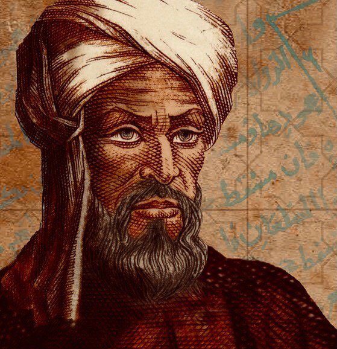

Welcome to the Mathematical World!
Muhammad ibn Musa al-Khwarizmi
Father of Algebra and Pioneer of Algorithms
Muhammad ibn Musa al-Khwarizmi (c. 780 – c. 850 CE) was a Persian polymath who made foundational contributions to mathematics, astronomy, and geography. Born in Khwarazm (modern-day Khiva, Uzbekistan), he worked in the prestigious House of Wisdom in Baghdad under the Abbasid Caliphate. There, he engaged in translation, preservation, and expansion of classical Greek and Indian works, and significantly advanced mathematical knowledge in the Islamic Golden Age.
Al-Khwarizmi is best known for his book Al-Kitāb al-Mukhtaṣar fī Ḥisāb al-Jabr wal-Muqābala (The Compendious Book on Calculation by Completion and Balancing), written around 820 CE. This treatise systematically laid out methods for solving linear and quadratic equations using logical, step-by-step instructions — thus establishing the field of algebra. The term "algebra" itself is derived from the word al-jabr in the book’s title.
In his algebraic methods, al-Khwarizmi solved equations such as:
- \[ax^2 + bx = c\]
- \[ax^2 = bx + c\]
- \[ax^2 + c = bx\]
He employed rhetorical algebra, explaining procedures in words, as symbolic notation had not yet been developed. His step-by-step approach later influenced European mathematics through Latin translations in the 12th century.
Al-Khwarizmi also introduced Hindu-Arabic numerals to the Islamic world, which later reached Europe and replaced Roman numerals. His arithmetic text on calculation using Indian numerals, known in Latin as Algoritmi de Numero Indorum, is the root of the word algorithm, showcasing his lasting impact on computation and computer science.
In addition to algebra and arithmetic, he contributed significantly to trigonometry, producing sine and cosine tables accurate for their time. In geography, his work Kitāb Ṣūrat al-Arḍ (Book of the Description of the Earth) revised and corrected Ptolemy’s geographical data. He created detailed maps and determined coordinates for thousands of locations, making significant improvements in cartography and navigation.
His works were translated into Latin and widely studied in medieval Europe, becoming standard references in mathematical education. Al-Khwarizmi’s influence extended to scholars like Fibonacci, and his methods laid the groundwork for later algebraic developments.
- Popularized decimal positional number system
- Systematized solution methods for quadratic equations
- Defined arithmetic algorithms, inspiring future computation
- Contributed to astronomical tables and refined geographic coordinates
He is rightly celebrated as one of the most influential scientists of all time. The very terms "algebra" and "algorithm" are derived from his works, and his legacy remains integral to modern mathematics and computer science.